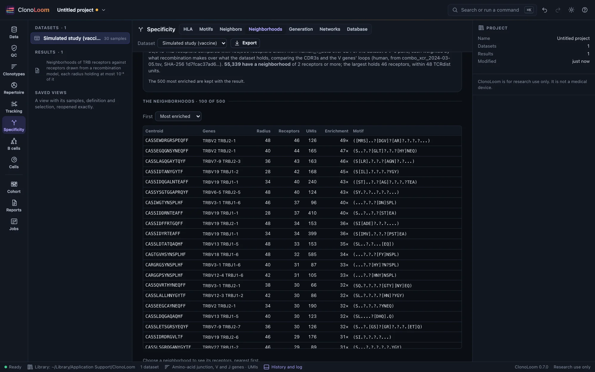
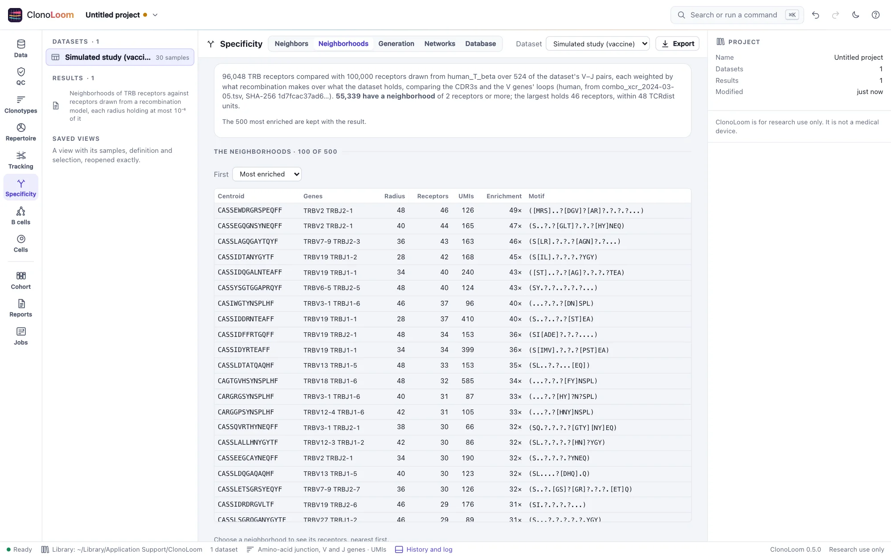

Neighborhoods and backgrounds
The Specificity view's Neighborhoods part gives each receptor the largest radius at which a background holds few enough receptors, and reports the dataset's receptors within it. A receptor recombination makes often takes a small radius; one it rarely makes can take a large one.
Each receptor as a centroid


Open receptors, define clonotypes by amino-acid junction (Clonotypes), and open Specificity › Neighborhoods. Find the neighborhoods compares every receptor of one locus with a background, as a job, and keeps the result with the project. For each receptor it reports:
- Its radius: the largest of 0, 2, …, 48 TCRdist units at which the weighted background within it is at most a share of the background's receptors (10−6 by default, Mayer-Blackwell et al.'s; tcrdist3's own default is 10−5).
- Its neighborhood: the dataset's receptors within that radius, the centroid counted. Choose one to see them, nearest first.
- Its enrichment: how much commoner the neighborhood is in the dataset than in the background, with an odds ratio and a χ² test. Enriched neighborhoods are shown first, by descending χ²; depleted ones follow, by ascending χ².
- Its motif: the residues its neighbors have at each position the distance compares, written as a pattern.
Why a background at all: the receptors with the most neighbors in a repertoire are the ones recombination makes most easily, and they are the same in everybody. Giving each receptor a radius the background cannot fill leaves the neighborhoods that are unusual in this dataset.
The backgrounds
- Drawn from a recombination model (the default): receptors drawn with the dataset's own V–J usage, so that the background has receptors with the right genes to be near the dataset's. Each is weighted by the model's own probability of its V–J pair over the dataset's share of it, so that the weighted background is the repertoire recombination alone would make: a receptor whose genes the dataset over-uses weighs less. The model is OLGA's for the locus, where downloaded, or ClonoLoom's own model of human TRB, built in (Generation probabilities).
- The dataset's own CDR3s, shuffled: every receptor keeps its V and J genes and takes another's CDR3. The genes and the CDR3s are those the dataset has, no longer together. It needs no model, and it is the stricter background where a dataset's CDR3s are unusual for reasons the model does not know.
A background of 100,000 receptors is drawn by default. The V genes' loops are part of the distance, as they are for TCRdist; a definition by V family, or without V, compares the CDR3s alone.
Reading a result
The radius is chosen so that almost no background receptor lies within it, so a large neighborhood at a large radius is the signal, not the radius alone. The relative rate depends on how large the background is beside the dataset, so compare neighborhoods within one result rather than across results of different sizes; χ² accounts for both counts but measures differences in either direction, so the ordering also uses the direction of the relative rate.
The neighborhoods are of the dataset as you have defined and filtered it. Pooling many samples makes the CDR3s that several of them share abundant, so a pooled cohort gives many large, loose neighborhoods (the picture above, of a whole simulated study, is one); a single repertoire gives few and tight ones. The checks below were made on one sample.
Receptors this alike may recognize the same antigen, and a neighborhood is a hypothesis, not a specificity: it says these receptors are unusual together, not what they bind. Matching them to known epitopes comes in a later release.
How it is checked
On Dash et al. 2017's 415 human epitope-specific β chains against a background of 5,204 OTS β chains with weights, every centroid's radius, its neighbors in the dataset and the background, and the rates, odds ratio and χ² computed from them equal tcrdist3 0.3's. On the simulated vaccination study, where every receptor's epitope is known, the twenty most enriched neighborhoods of a vaccinated subject's day-14 sample are all receptors of the vaccine's epitopes, and so is every one of the 149 receptors in them; in a subject given the placebo, which holds the same receptors but rare and unexpanded, none of the twenty is. Ten thousand receptors against a background of 100,000 take about 1.3 seconds on ten processors.
Using the result
Export writes each centroid with its radius, neighborhood and enrichment (neighborhoods.csv) and each neighborhood's receptors with their distances (members.csv). The methods paragraph says how the background was made and how each radius was chosen. Scripts use find_neighborhoods (Remote control).